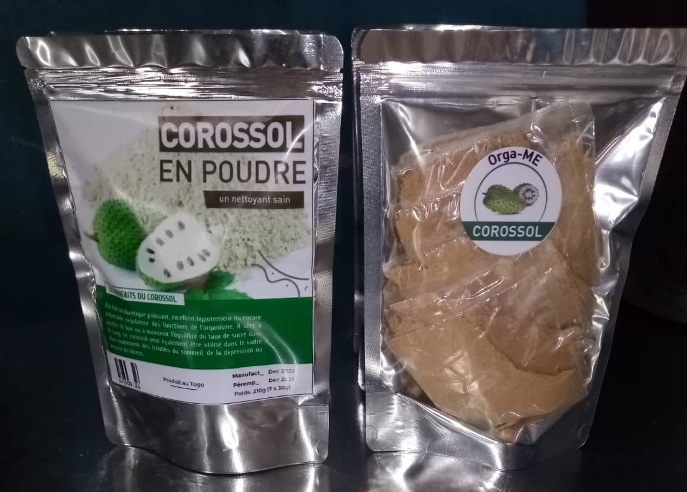
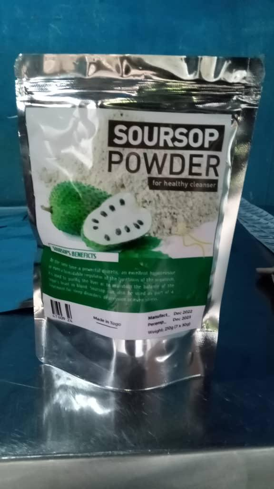

Soursop Leaf Tea


Our Soursop Leaf Tea is made from carefully selected, sun-dried leaves of the soursop (Annona muricata), a tropical fruit tree native to the Caribbean and Central America. The leaves are harvested at optimal ripeness by local growers in our partner regions of Togo and Senegal, then gently dried using traditional methods to preserve aromatic compounds, vitamins, and essential minerals. It brews into a mellow, slightly tangy herbal infusion suitable for daily use. Each cup delivers a delicate balance of natural sweetness and subtle herbal complexity that has made soursop leaf tea a cherished beverage throughout West Africa for generations.
Health Benefits & Body Support
Soursop leaves contain powerful phytochemicals including acetogenins, alkaloids, and polyphenols that work synergistically to support your immune system. Rich in antioxidants, the tea protects cells from oxidative stress, supports digestive health by promoting healthy gut flora balance, and soothes inflammation in the digestive tract. Beyond digestion, soursop leaf tea promotes relaxation and calm, supports natural detoxification, and helps maintain energy levels and mental clarity.
How to Prepare
Place one tablespoon of dried soursop leaves in a cup, pour 8 oz of hot water over them, cover, and steep for 5-7 minutes. Strain and enjoy warm. Add honey or lemon to taste. Start with less leaves and adjust to your preference.
Ingredients
100% dried soursop leaves (Annona muricata) — No additives, no preservatives, no artificial flavors.